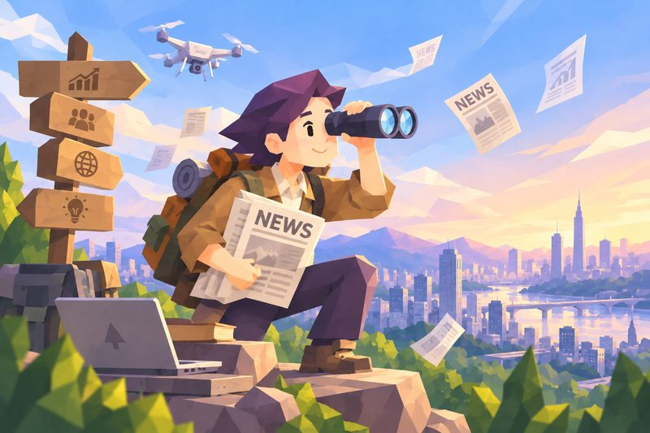
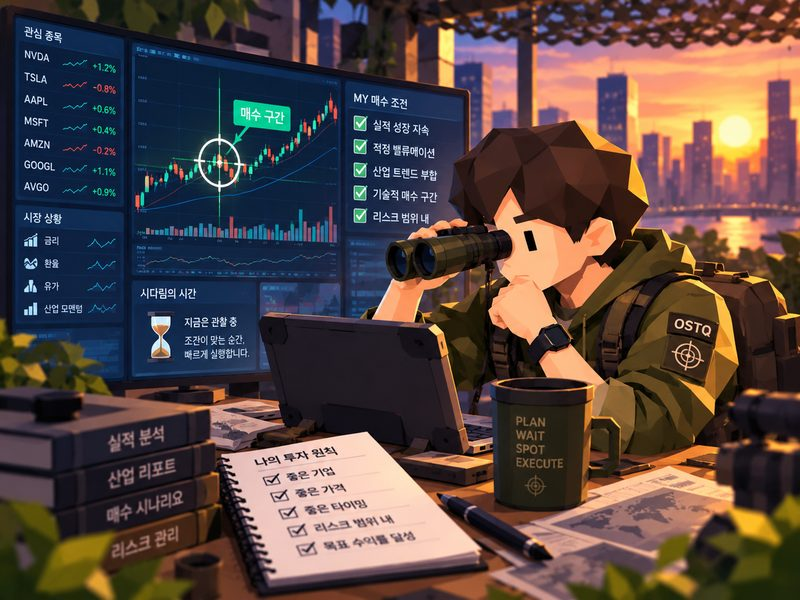

INVEST TYPE · 나의 투자 성향 찾기
나는 어떤 유형의
투자자일까?
나라는 한 사람에 대해 오롯이 알아야 제대로 된 투자를 할 수 있습니다.
고르고, 내려놓고, 다시 선택하는 동안 미처 알지 못했던 나를 만날 수 있습니다.
정답은 없어요. 평소의 나와 가까운 쪽을 따라가 보세요.
5단계
5분 소요
16투자 유형


CNTQONTLCSFLOSTQHOW IT WORKS
이렇게 진행돼요
단어를 고르고 내려놓으며, 나도 몰랐던 기준을 만나요.
STEP 1~3단어로 고르고, 내려놓고끌리는 단어 16개를 고른 뒤, 하나씩 내려놓으며 끝까지 남는 4개를 찾아요.
STEP 4~5갈림길에서 선택하고실제 투자 순간을 떠올리며 평소의 나와 가까운 쪽을 골라요.
RESULT16가지 중 나의 유형나의 투자 성향과 끝까지 남긴 단어, 그리고 AI와 나누는 더 깊은 이야기까지.
5분이면 충분해요. 지금 시작해 볼까요?
진단 시작하기 →1단계 · 끌리는 단어
투자할 때 나와 가까운
단어 16개를 골라주세요
좋은 투자법이라고 생각하는 단어가 아니라,
평소 투자하는 나와 가까운 단어예요.
선택한 단어선택 9 / 16
리포트전문가 의견정기 점검가치 공감손절선원칙멘토민첩함새로운 시장발 빠른 대처긴 호흡복리기업 신뢰수시 점검루틴팩트매수 조건꾸준한 적립산업 트렌드미래 성장재무제표유연함마음의 끌림
결과는 자기 이해를 돕기 위한 참고용이에요 · 개인정보처리방침
4단계 · 투자의 갈림길 · 1 / 4
이럴 때, 나는
어느 쪽에 가까울까요?
충분히 공부한 종목인데,
전문가들의 의견은
내 생각과 다릅니다.
전문가들의 의견은
내 생각과 다릅니다.
결과는 자기 이해를 돕기 위한 참고용이에요 · 개인정보처리방침
나의 투자 성향
C N T Q
이슈 사냥꾼
뉴스 속에서,
기준에 맞는 기회를 잡아내는 투자자
여러 뉴스와 전망을 빠르게 살피는 데 능숙합니다. 그 정보가 자신의 기준에 맞다고 판단되면, 곧바로 움직입니다.
나를 만든 4가지 성향 ⓘ 용어 보기
C참고형여러 의견과 정보를 폭넓게 모아서
N직관형앞으로의 흐름과 가능성을 먼저이런 경향이 있지만, 이번 선택에서는 아직 뚜렷하게 드러나지 않았어요
T분석형원칙과 기준을 세워 판단
Q단기대응형상황 변화에 맞춰 기민하게
내가 끝까지 남긴 4개의 단어
원칙멘토민첩함새로운 시장
이 결과는 내가 직접 고르고 남긴 선택에서 출발했어요.
나의 투자 행동 돌아보기 유형의 일반적인 경향이에요
나의 강점
- C여러 의견과 자료를 폭넓게 살펴 판단의 시야를 넓혀요.
- N산업의 흐름과 가능성을 일찍 그려보는 편이에요.
- T미리 정한 원칙과 기준으로 감정의 흔들림을 줄여요.
- Q변화에 빠르게 반응하고 기회를 놓치지 않아요.
주의할 점
- C다양한 의견에 휩쓸리면 내 기준이 흐려질 수 있어요.
- N기대가 앞서면 현재 수치로 확인할 부분을 건너뛸 수 있어요.
- T기준에 맞지 않는 새로운 상황에는 대응이 늦어질 수 있어요.
- Q잦은 판단 변경으로 처음 세운 원칙이 흔들릴 수 있어요.
이 경향을 바탕으로, 아래에서 AI와 함께 나만의 투자 원칙을 정리해 볼 수 있어요.
성향별 일반적인 경향을 설명한 것이며 투자 조언이 아니에요.
나의 투자 온도균형기회와 위험 사이에서 자신이 받아들일 수 있는 균형점을 찾으려는 편이에요.
신중균형과감
마지막 2개 질문(가격 등락에 대한 선호, 불편함을 느끼는 손실 폭)을 바탕으로 해요. 유형과는 별개이며, 금융상품의 위험등급이나 투자 적합성을 진단하는 것이 아니에요.
로그인하면 이 결과를 내 계정에 저장해 언제든 다시 볼 수 있어요.
★ AI 심층분석 · NEXT STEP
그런데, 같은 CNTQ도
모두 다릅니다.
당신이 고르고, 내려놓고, 끝까지 남긴 선택을 AI에게 보여주면 조금 더 깊은 이야기를 들을 수 있어요.
좀 더 깊은 내면의 나를 알아보세요 →🔒 로그인 후 이용할 수 있어요이 결과는 자기 이해를 돕기 위한 참고용이며,
투자 조언이나 투자자 적합성 진단이 아닙니다.